Overview
This project implements a full pipeline for planar image warping and panorama stitching. Part A focuses on manual homography recovery and inverse warping/rectification; Part B builds an automatic system that detects and matches features, estimates a robust homography with RANSAC, and blends the images into a mosaic.
All code for the auto-stitch pipeline lives in main.py. I added: (1) Harris from harris.py, (2) vectorized ANMS, (3) 40→8 normalized descriptors, (4) Lowe-ratio matching, (5) 4-point RANSAC with inlier refit, (6) distance-transform feathering masks for seam-aware blending, and (7) a Bells & Whistles multiscale detector.
A.1 · Shoot the Pictures
I captured pairs by rotating the camera about (approximately) a fixed center of projection to best satisfy a single projective transform between views. Below are source images I took for this project.
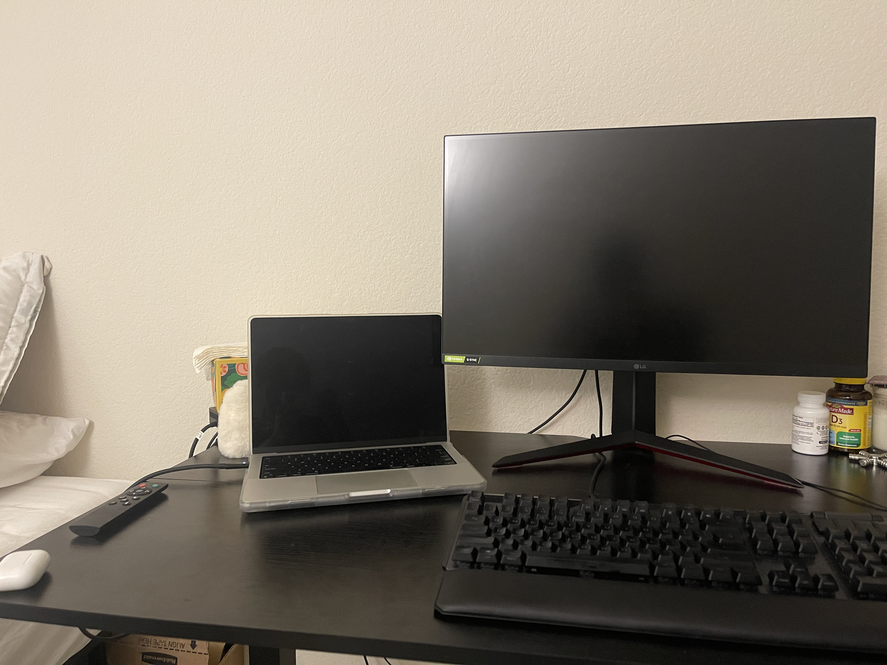
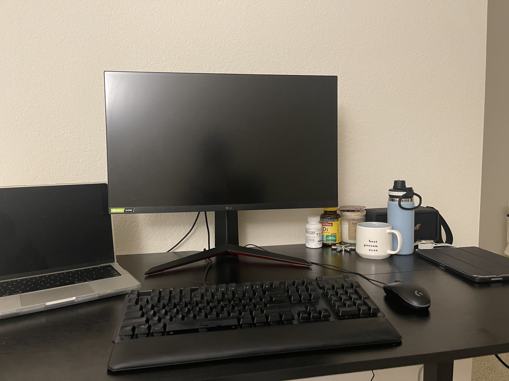
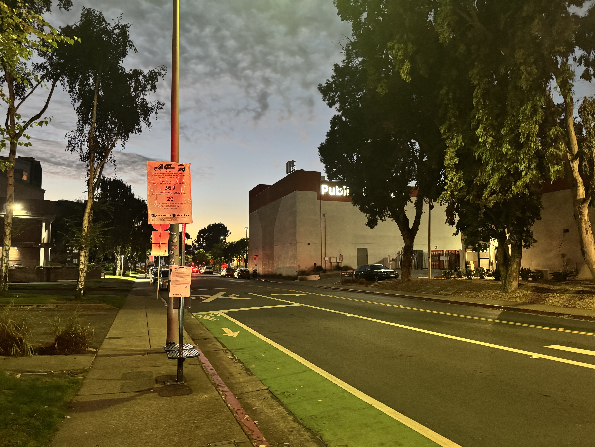
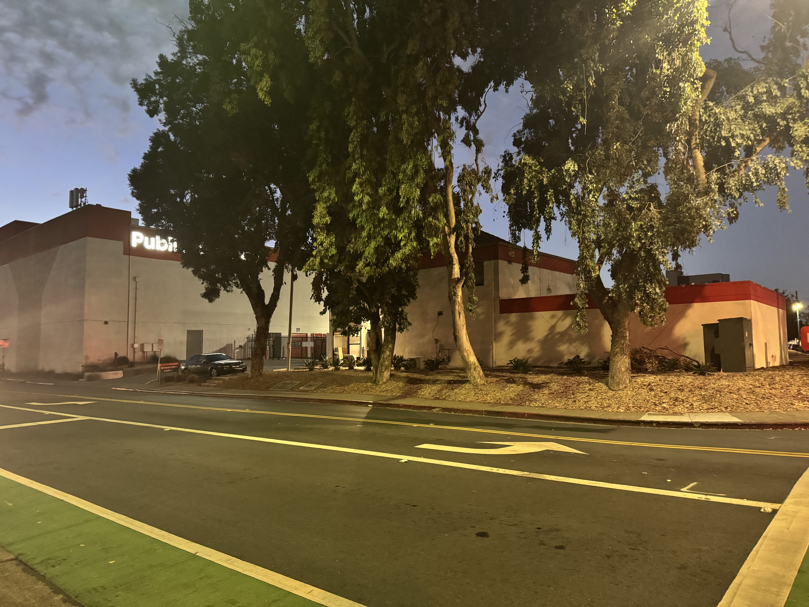
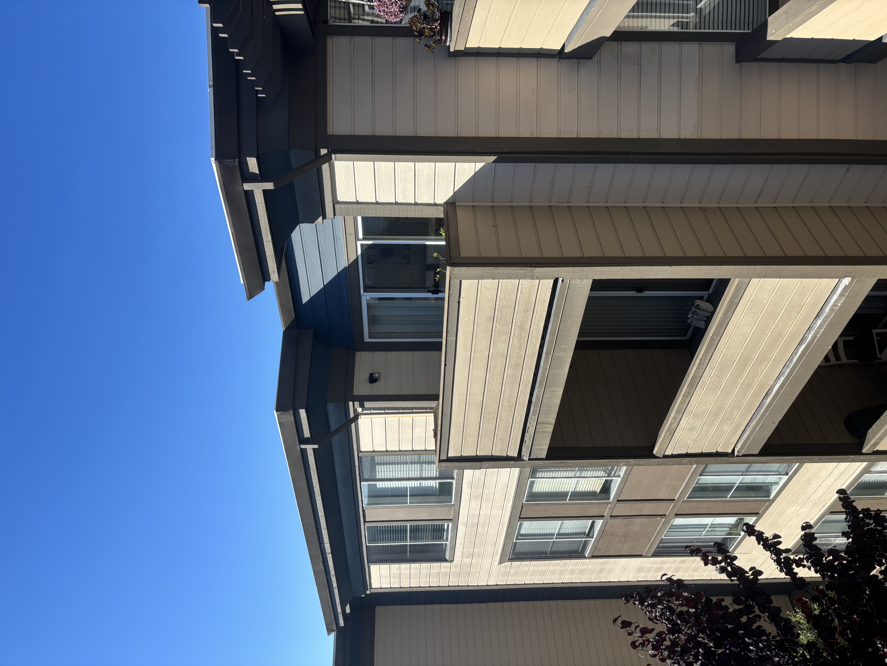
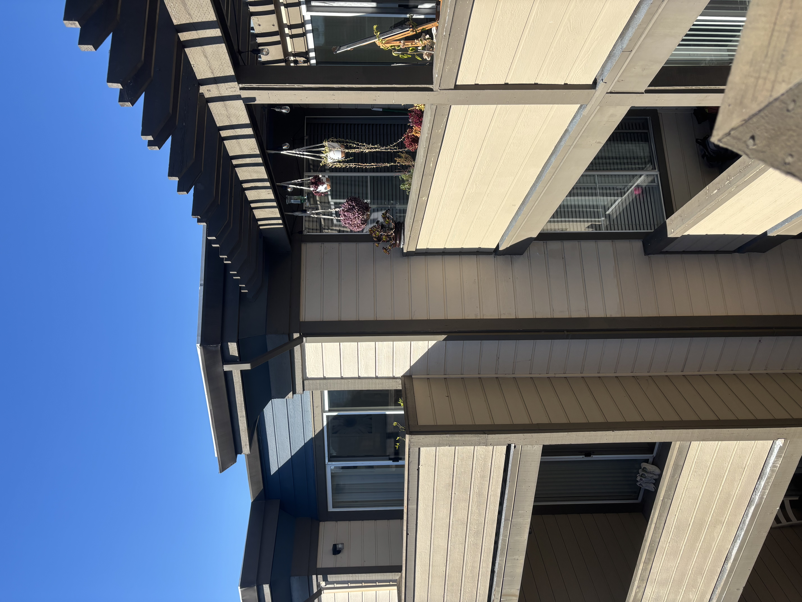
- Overlap: ~50–60% to ensure enough common structure for matching.
- Avoided strong barrel distortion and moving objects.
- Varied viewpoints tested (indoor wall/desk scenes) to study parallax limits of a single homography.
A.2 · Recover Homographies (Normalized DLT)
Given pairs \((x,y) \leftrightarrow (x',y')\), we solve for a 3×3 matrix \(H\) so that \(\mathbf{p}' \sim H\,\mathbf{p}\) (homogeneous coordinates). I use the normalized DLT for stability: translate/scale each point set to zero-mean unit average distance, form a 2N×9 matrix \(A\) (two rows per correspondence), then take the smallest right singular vector of \(A\) via SVD. Finally, denormalize and re-scale so \(H_{33}=1\).
\[ \begin{bmatrix} -x & -y & -1 & 0 & 0 & 0 & x x' & y x' & x' \\ 0 & 0 & 0 & -x & -y & -1 & x y' & y y' & y' \end{bmatrix} \]
I use normalized DLT (Hartley): both point sets are translated to zero mean and scaled so mean distance is \(\sqrt 2\). Solve via SVD (last right singular vector), then de-normalize and scale to \(H_{33}=1\).
A matrix (first 8 rows of 22)
| a1 | a2 | a3 | a4 | a5 | a6 | a7 | a8 | a9 |
|---|---|---|---|---|---|---|---|---|
| 1.0673 | 1.8994 | -1.0000 | 0.0000 | 0.0000 | 0.0000 | 1.3861 | 2.4668 | -1.2987 |
| 0.0000 | 0.0000 | 0.0000 | 1.0673 | 1.8994 | -1.0000 | 2.1208 | 3.7743 | -1.9871 |
| 0.8760 | 1.5845 | -1.0000 | 0.0000 | 0.0000 | 0.0000 | 0.9078 | 1.6421 | -1.0363 |
| 0.0000 | 0.0000 | 0.0000 | 0.8760 | 1.5845 | -1.0000 | 1.4222 | 2.5723 | -1.6234 |
| 0.6707 | -0.8298 | -1.0000 | 0.0000 | 0.0000 | 0.0000 | 0.3632 | -0.4493 | -0.5415 |
| 0.0000 | 0.0000 | 0.0000 | 0.6707 | -0.8298 | -1.0000 | -0.6139 | 0.7594 | 0.9152 |
| 0.1412 | 1.3722 | -1.0000 | 0.0000 | 0.0000 | 0.0000 | 0.0310 | 0.3009 | -0.2193 |
| 0.0000 | 0.0000 | 0.0000 | 0.1412 | 1.3722 | -1.0000 | 0.1883 | 1.8298 | -1.3334 |
Show full A (22×9)
[[ 1.06728967 1.89940663 -1. 0. 0. 0.
1.38610093 2.46678046 -1.29871109]
[ 0. 0. 0. 1.06728967 1.89940663 -1.
2.12079919 3.77428936 -1.98708865]
[ 0.87601304 1.58449999 -1. 0. 0. 0.
0.90784081 1.64206888 -1.03633253]
[ 0. 0. 0. 0.87601304 1.58449999 -1.
1.42215564 2.57234251 -1.62344117]
[ 0.67074056 -0.82978432 -1. 0. 0. 0.
0.36320318 -0.44932471 -0.54149578]
[ 0. 0. 0. 0.67074056 -0.82978432 -1.
-0.61385267 0.75940737 0.91518645]
[ 0.14123086 1.37222958 -1. 0. 0. 0.
0.03096861 0.3008977 -0.2192765 ]
[ 0. 0. 0. 0.14123086 1.37222958 -1.
0.18832342 1.82979105 -1.33344382]
[-0.43493167 0.13826204 -1. 0. 0. 0.
0.19692874 -0.06260241 0.45278086]
[ 0. 0. 0. -0.43493167 0.13826204 -1.
-0.05041521 0.01602668 -0.11591525]
[ 0.78737265 -1.62288255 -1. 0. 0. 0.
0.46622716 -0.96095783 -0.59213024]
[ 0. 0. 0. 0.78737265 -1.62288255 -1.
-1.38385445 2.85231299 1.75755972]
[-0.37428299 -1.24732721 -1. 0. 0. 0.
0.19875703 0.6623733 0.53103411]
[ 0. 0. 0. -0.37428299 -1.24732721 -1.
0.44677261 1.48890452 1.19367597]
[-0.60754717 1.36523165 -1. 0. 0. 0.
0.298857 -0.67156767 0.49190749]
[ 0. 0. 0. -0.60754717 1.36523165 -1.
-0.76818072 1.72619457 -1.26439683]
[-1.85551056 -1.34529817 -1. 0. 0. 0.
3.17614723 2.30279749 1.71173762]
[ 0. 0. 0. -1.85551056 -1.34529817 -1.
2.05259631 1.48819097 1.10621646]
[-0.52823735 -0.10899799 -1. 0. 0. 0.
0.29996442 0.06189551 0.56785918]
[ 0. 0. 0. -0.52823735 -0.10899799 -1.
0.06034656 0.01245208 0.11424138]
[ 0.25786295 -1.20533966 -1. 0. 0. 0.
0.01737303 -0.0812075 -0.06737312]
[ 0. 0. 0. 0.25786295 -1.20533966 -1.
-0.3190811 1.4914942 1.23740573]]Recovered Homography \(H\) (Desk_Left→Desk_Right)
| 3.40187491 | 0.30172659 | -7971.77295389 |
| 0.63896041 | 2.83108044 | -1924.95290764 |
| 0.00058304 | 0.00001624 | 1.00000000 |
Reprojection Error
RMSE: 2.10 px
Per-point details
| # | (x,y) in Desk_Left | GT (x',y') in Desk_Right | pred (x',y') | error (px) |
|---|---|---|---|---|
| 1 | 2655.0,429.0 | 465.0,388.0 | 465.63,385.93 | 2.17 |
| 2 | 2737.0,564.0 | 579.0,546.0 | 579.41,545.35 | 0.77 |
| 3 | 2825.0,1599.0 | 794.0,1649.0 | 793.47,1648.67 | 0.63 |
| 4 | 3052.0,655.0 | 934.0,672.0 | 934.88,673.64 | 1.86 |
| 5 | 3299.0,1184.0 | 1226.0,1201.0 | 1226.18,1201.28 | 0.33 |
| 6 | 2775.0,1939.0 | 772.0,2015.0 | 775.06,2014.63 | 3.08 |
| 7 | 3273.0,1778.0 | 1260.0,1770.0 | 1259.39,1770.42 | 0.74 |
| 8 | 3373.0,658.0 | 1243.0,702.0 | 1243.18,703.03 | 1.04 |
| 9 | 3908.0,1820.0 | 1773.0,1732.0 | 1775.01,1730.51 | 2.51 |
| 10 | 3339.0,1290.0 | 1276.0,1301.0 | 1272.46,1300.87 | 3.54 |
| 11 | 3002.0,1760.0 | 1000.0,1789.0 | 997.41,1790.62 | 3.05 |
A.3 · Warp & Rectify (Inverse Mapping)
Warping uses inverse mapping: for each pixel \((x_o,y_o)\) in the output canvas, map back through \(H^{-1}\) to subpixel coordinates \((x_i,y_i)\) in the source image and interpolate. I implemented both nearest-neighbor and bilinear interpolation from scratch and verified against OpenCV’s remap.
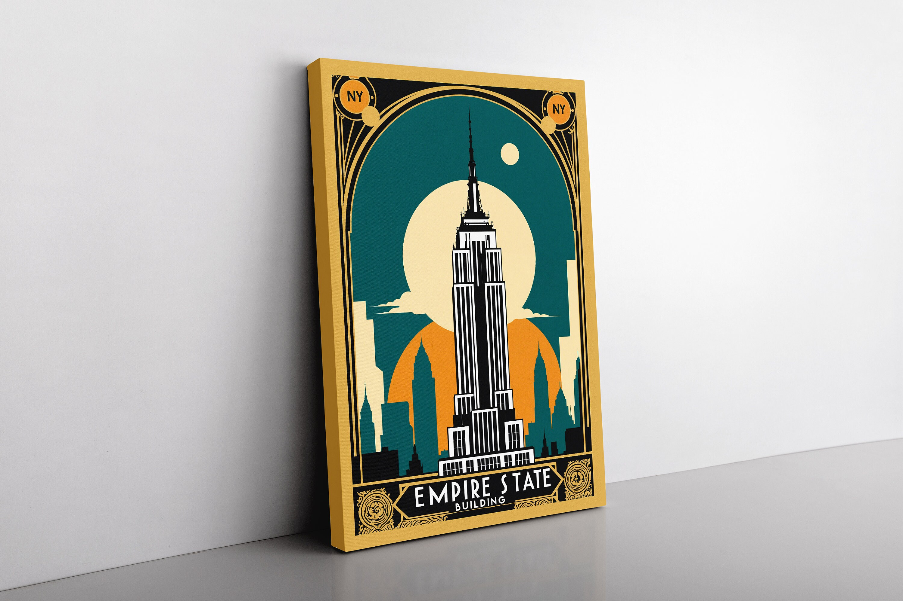
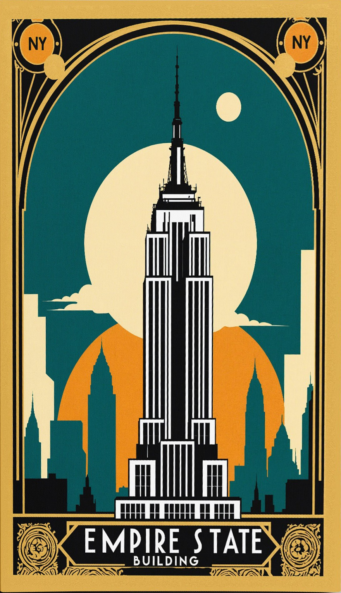
- Bounding box: Warp the four source corners to predict output bounds and allocate a tight canvas.
- Alpha mask: A binary support mask is carried alongside each warp to drive blending later on.
- Interpolation trade-off: nearest is fast but jagged; bilinear is smooth but slightly blurs subpixel detail.
A.4 · Blend into a Mosaic
I warp the right image into the left image’s frame. Rather than overwrite, I compute distance-transform based soft alphas so each image dominates near its interior and fades at the boundary. In overlap, the per-pixel weighted average avoids hard seams and reduces ghosting. For tougher scenes, a Laplacian-pyramid multiband blend can be used.


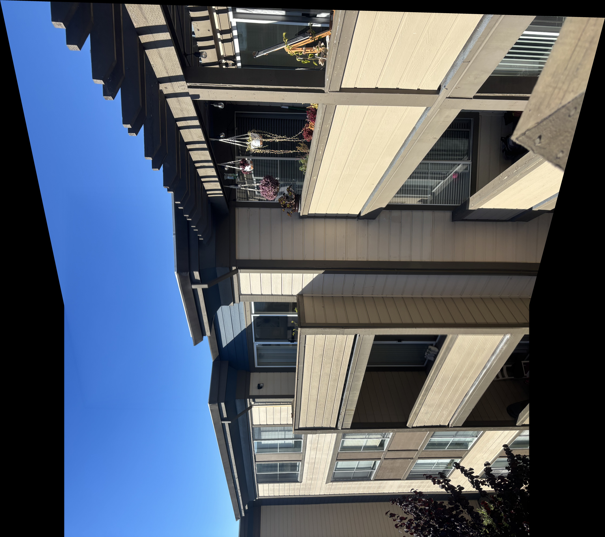
A.5 · Bells & Whistles — Cylindrical / Spherical Mapping
Very wide fields of view (≫60–70°) suffer from perspective stretch when stitched on a plane. A common remedy is to pre-warp each image onto a cylindrical (or spherical) surface, blend there, and optionally map back. After cylindrical warping, camera yaw becomes (approximately) a horizontal translation, so mosaicing reduces to aligning images along the x-axis with minimal vertical drift.
Cylindrical projection (what we compute)
Let (u, v) be pixel coordinates in the original image relative to the principal point (cx, cy), and let f be the focal length in pixels. To warp to a unit cylinder, we map each output pixel (u', v') to a source location (u, v) by the inverse of:
u' = f * atan((u - cx) / f)
v' = f * (v - cy) / sqrt((u - cx)^2 + f^2)We then sample the source image at (u, v) with bilinear interpolation. For spherical projection, the vertical mapping uses atan((v - cy) / sqrt((u - cx)^2 + f^2)).
Choosing the focal length f
- From EXIF: if you have focal length in mm and sensor width in mm, convert to pixels: f_px = f_mm * (image_width_px / sensor_width_mm).
- By appearance: for ~4–8K-wide phone images, f ≈ 700–1400 px is a good starting range.
Pipeline on a cylinder
- Pre-warp each image into cylindrical coordinates with inverse mapping and bilinear sampling.
- Detect/match features on the cylindrical images (Harris+ANMS → 40→8 descriptors → Lowe ratio).
- Estimate translation (or a weak homography) with RANSAC — on a cylinder, yaw ≈ x-shift.
- Blend using the same distance-transform feathering as A.4/B.4; then crop black borders.
Notes & pitfalls
- Principal point: center coordinates first; a poor (cx, cy) leads to vertical bowing.
- Vertical scaling: the sqrt((u-cx)^2 + f^2) denominator keeps vertical lines straight after wrapping.
- Exposure seams: optionally match gain/bias in the overlap before blending, same as A.4.
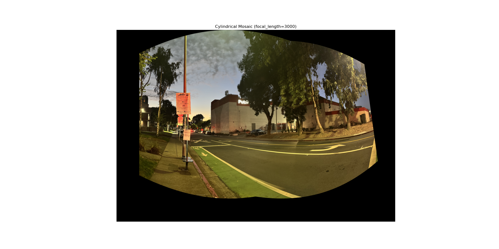
B.1 · Harris Corners (from harris.py) & ANMS
I call get_harris_corners(im, edge_discard=20) to compute a Harris response map \(h\) and raw peaks (ys,xs). Scores for ANMS are sampled directly as \(h[y,x]\). ANMS selects a subset of size \(N\) by maximizing the minimum distance to any stronger corner, i.e., radius \(r_i = \min_{j: h_j > c\,h_i} \|\mathbf{x}_i-\mathbf{x}_j\|\). I use a vectorized implementation with an initial top-k pruning for speed.
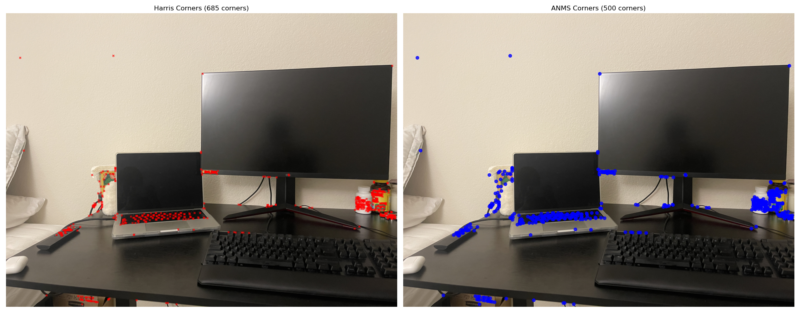
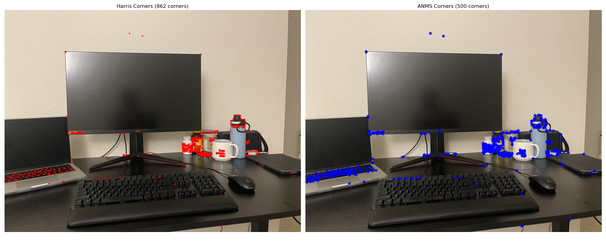
- Edge handling: discard within 20 px to avoid spurious peaks at borders.
- Parameters: ANMS N≈600, robust factor c≈0.9–1.1, preprune top-k≈1200–1500 by Harris score.
B.2 · Feature Descriptors (40×40 → 8×8)
For each retained corner, I extract a 40×40 window (zero-padded at borders), apply a light Gaussian blur (σ≈1), and downsample to 8×8 using area resampling. The 64D vector is then bias/gain normalized: subtract mean and divide by standard deviation (ε=1e−6) to reduce sensitivity to illumination and local contrast.
- Why 40→8: a larger antialiased context stabilizes the descriptor against jitter while keeping it compact.
- Orientation: axis-aligned (no rotation invariance in this base version).
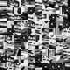
B.3 · Matching with Lowe Ratio
I compute Euclidean distances from each descriptor in image 2 to all descriptors in image 1, find the best (NN) and second-best (2NN), and accept the match if \(\frac{\|d-d_{\text{NN}}\|}{\|d-d_{\text{2NN}}\|} < \tau\). Typical \(\tau\) is 0.60–0.75 (I default to 0.65). This removes many ambiguous correspondences in textured regions.
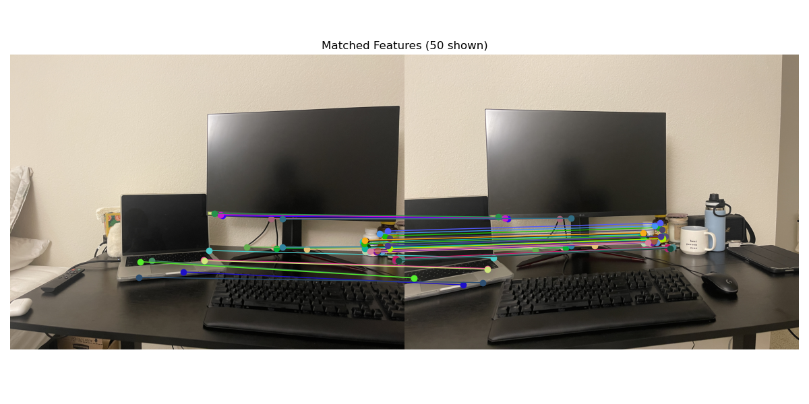
B.4 · 4-Point RANSAC Homography & Automatic Mosaic
RANSAC samples 4 matches to hypothesize \(H\) (right→left), projects all left points, and counts inliers whose reprojection error is below a tolerance (2–4 px). The best \(H\) is refit using all inliers via normalized DLT. Finally, I invert direction as needed so that the right image is warped into the left frame for blending.
- Geometry checks: If blend appears left↔right reversed, the mapping direction is wrong (invert \(H\)).
- Parallax: A single \(H\) assumes a dominant plane or pure rotation. Large depth variation causes kinks/ghosts.
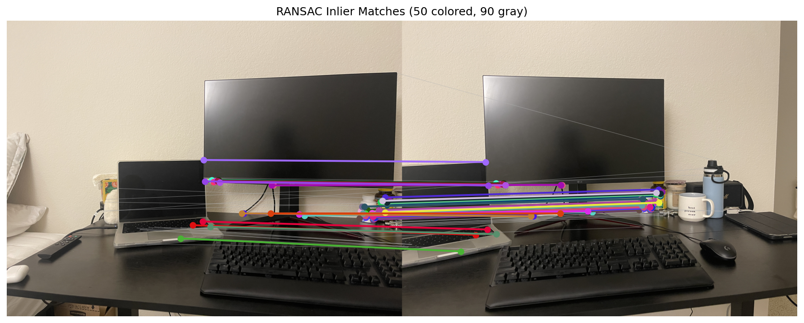
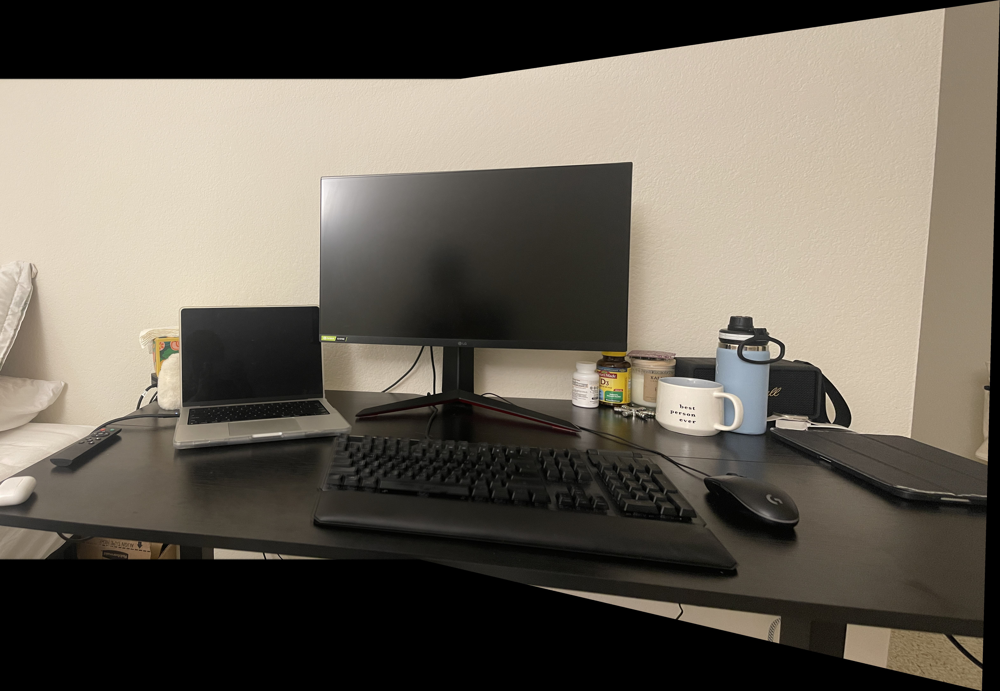
Saved homography
| 1.62593301 | 0.01498929 | -2178.48775289 |
| 0.17961207 | 1.35171383 | -416.41649075 |
| 0.00015966 | -0.00002208 | 1.00000000 |

B.5 · Multiscale Features (Gaussian Pyramid)
To improve robustness under moderate scale differences and blur, I detect at multiple pyramid levels (L=3), lift coordinates back to full resolution (multiply by \(2^\ell\)), then greedily suppress near-duplicates within a small radius at full scale. Descriptors are still computed on (blurred) 40×40 windows sampled from the appropriately downscaled image so that the effective physical support is comparable across levels.
- Pyramid: downscale ×2 per level with anti-aliasing.
- Merge: concatenate level detections, sort by Harris score, suppress within r≈6 px at full res.
- Matching: same Lowe ratio; RANSAC run on full-res coordinates.
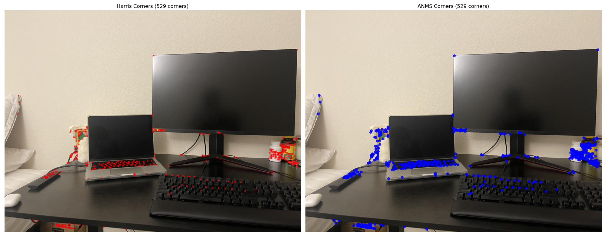
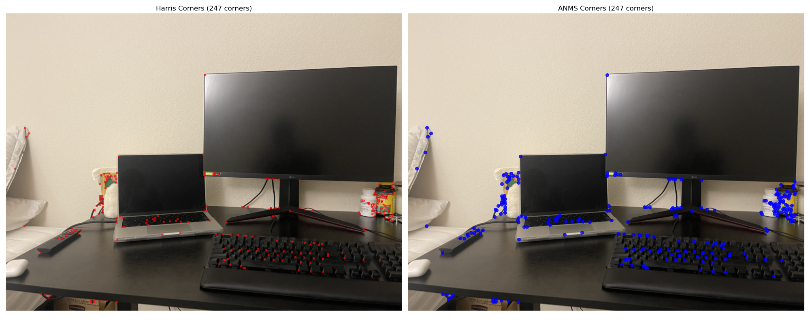
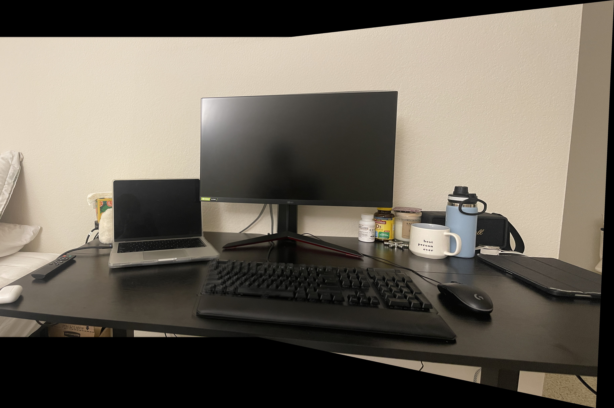
Discussion, Design Choices & Ablations
Blending
I use distance-transform feathering to produce soft alphas that taper near image borders. This reduces double-edges without washing out detail. In strong exposure differences a quick gain/bias match in the overlap stabilizes color. For hard scenes I tested a 4-level Laplacian pyramid; it removes low-frequency seams while preserving edges.
Parameter Sensitivity
- Lowe ratio: 0.60–0.65 typically yields clean inliers; 0.75 yields more matches but more outliers.
- RANSAC tol: 2–3 px for high-res inputs; relaxing to 4–5 px increases inliers but can bias \(H\).
- ANMS: N≈600 works well on 12–24 MP phone images; top-k pruning keeps ANMS cost bounded.
Failure Modes
- Parallax: Large depth variation breaks the planar model. Remedy: shoot with fixed COP, use more distant scene, or switch to cylindrical/spherical mapping.
- Textureless Regions: Few corners → unstable \(H\). Remedy: lower the ratio threshold, increase ANMS N, or hand-pick a planar region.
- Direction Errors: If the mosaic appears swapped L↔R, invert the mapping (use \(H_{RL} = H_{LR}^{-1}\)).
Expanded Implementation Details
Homography: system of equations
For each correspondence (x, y) to (x', y'), we add two rows to matrix A. Stacking all pairs yields a 2N×9 system A h = 0, where h is the 9-vector of H's entries. We solve by SVD, taking the right singular vector associated with the smallest singular value, then normalize H so its bottom-right entry is 1. With more than four pairs, we refit H on the inliers found by RANSAC to improve accuracy.
Warping: inverse mapping and interpolation
- Build an output canvas by warping all source corners and taking min/max bounds.
- For each canvas pixel, map back with H⁻¹ into source coordinates and sample: nearest neighbor (fast, blocky) or bilinear (smooth).
- Keep a binary support mask in parallel to identify valid samples.
Feathered blending with distance transform
- Create a binary mask per warped image (1 on valid pixels, 0 on holes).
- Compute a distance transform; convert to a soft alpha that tapers to 0 near borders.
- Normalize alphas across images at each pixel and blend by weighted average.
- Optionally compute per-image gain/bias in the overlap to match exposure before blending.
Corner detection and ANMS
Harris response is computed from harris.py. Peaks near image borders are discarded. Adaptive Non‑Maximal Suppression (ANMS) retains a target count of strong, well‑spaced corners by maximizing the minimal distance to any stronger response. This produces an even spatial distribution and prevents clustering, as showcased in the example.
Descriptors and matching
Around each corner we take a 40×40 window, blur slightly, then downsample to 8×8. We zero‑mean and unit‑variance normalize the 64‑D vector. Matching uses the Lowe ratio between nearest and second‑nearest neighbors; thresholds between 0.60 and 0.75 work well depending on texture and noise.
RANSAC and robustness
We repeatedly fit H from 4 random matches, count inliers using reprojection error, and keep the best. Finally, we recompute H on all inliers. If the mosaic appears reversed (left on right), we invert the mapping so the right image is warped into the left frame.
Multiscale extension
A Gaussian pyramid provides detections at multiple scales. We lift coordinates back to full resolution and suppress near duplicates. Descriptors are extracted at the appropriate scale to keep physical support comparable across levels. This increases match recall under moderate scale change while keeping outliers manageable with the Lowe ratio and RANSAC.